TSU-03 · case 4 of 11 · This Side Up
Reading the reference
Can the movement of a famous rooftop scene be measured and given to Boone without using a single frame of it?
Tempus Fugit v1. Joint angles, camera motion and light were measured from the reference; Boone was built as 3D cards and set on a computed rooftop. 55 s.
How it was made
- Cut the reference into shots and draw a wordless animatic in line, to its rhythm.
- Run five pose estimates per frame, fuse them, fix left and right swaps, lift the pose to 3D with depth and a solved camera.
- Build Boone as 3D cards from his photos and ray-cast a rooftop around him.
- Shoot each scene: fire, the agent's gun, the lean, lying. Open and close on the clock.
- Edit, add sound from an event list, add the end credits.
What this case teaches
- Only numbers leave the reference. No frame of it appears in any film or on this page.
- Five estimates fused beat one good estimate, because the errors are different.
How it differs. The first case to work from a film rather than from photographs alone.
Versions, in order
Every cut that was rendered, oldest first, with what changed from the one before. Videos are 640 px web encodes.
-
01
Animatic
Oct 18 05:06 · 0:41Line drawings only, cut to the reference's rhythm.
-
02
Rooftop plate
Oct 18 05:07 · 0:20The first rooftop: a flat skyline under haze.
-
03
Breakdown
Oct 18 08:02 · 0:41Our skeleton on the left, Boone's pose on the right.
-
04
Tempus Fugit v1
Oct 18 10:10 · 0:55Clock open, fire, the agent, the lean, lying, clock close, credits.
Prompts and notes
What was pasted into the session, in order, and what each one did. Full text verbatim; each also has its own page under Docs.
An essay on bullet time and Virgil's line: the dodge (still bound by time) against the refusal (changing its rules). Image links removed.
Read it all (866 words)
Worked for 4m ### TEMPUS FUGIT: The Matrix and the Escape from Time What if time flies only because we are trapped inside its rules? That is the philosophical question dramatized by bullet time in The Matrix (1999). Virgil's Tempus fugit describes time as irretrievable. Human beings cannot stop its passage. But the Wachowskis turn this ancient predicament into an experiment: what happens when consciousness, movement, and the observer's point of view no longer have to experience time at the same speed? [image link removed] 1\. The dodge Neo still struggles against time. [image link removed] 2\. The refusal Neo discovers he can change the rules. These are two philosophically different moments. On the rooftop, Neo moves fast enough to dodge bullets, but he is still bound by their trajectories. He can respond to the approaching future, not abolish it. He is even grazed by a bullet. Later, after his apparent death and return, he simply raises his hand and stops the bullets. He no longer needs to dodge them. Morpheus had anticipated this distinction: “When you're ready, you won't have to.” The first scene is about escaping a deadline. The second is about escaping the system that produces deadlines. ### The camera escapes time before Neo does The most radical thing about bullet time is not the slowing down. It is that the camera continues moving around an event that has nearly ceased to move. The Wachowskis wanted an apparently impossible camera movement. Visual-effects supervisor John Gaeta developed a technique using arrays of still cameras, with as many as 120 cameras for certain sequences. Their images were assembled into a moving viewpoint, allowing the audience to travel around an instant. This creates three temporal experiences: | | What happens | | -------------------- | ----------------------------------------------------------------------------- | | Physical event | A bullet travels toward a body. | | Cinematic event | That fraction of a second expands into something we can examine. | | Spectator experience | We are granted time to observe what the character barely has time to survive. | The filmmaker has converted time into something like navigable space. And that is a profound transformation of Tempus fugit. Instead of a moment merely disappearing, it becomes a place we can revisit, inspect, and move around. ### Bergson, Deleuze, and the impossible instant Henri Bergson would introduce a complication. His concept of duration describes lived time as continuous and qualitative. The moments of a life aren't really separate units that we can extract without changing their nature. Bullet time deliberately does the opposite. It separates movement into photographic instants and reconstructs a new temporal experience from them. Gilles Deleuze offers another route: cinema can make time perceptible rather than merely showing actions occurring within it. There is already an unusually relevant scholarly analysis: [Darren Tofts, “Truth at Twelve Thousand Frames per Second: The Matrix and Time-Image Cinema” (2007)](https://doi.org/10.1515/9781503625365-008?utm_source=chatgpt.com). Tofts connects the effect to Deleuze's time-image. He describes the camera orbiting an almost motionless body as something resembling a spectator walking around a sculpture. He also makes the illuminating comparison between Neo and an animator controlling the individual frames of an action. That is especially significant: Neo's ultimate power is not superhuman speed. It is becoming something like an animator within his own world. ### The final transformation: from perceiving time to operating on it Early in the film, the camera reveals temporal possibilities that Neo himself cannot yet control. In fact, Trinity's suspended kick introduces the effect before Neo has discovered his powers. By the finale, the relation changes. Neo says “No,” raises his hand, and arrests the bullets. The film has moved beyond altering how an event is shown. Within the fictional simulation, Neo now alters what the event is allowed to do. That is a distinction between three powers: observing an event, delaying its representation, and changing its causal outcome. Virgil can describe the passing moment. The clock can measure it. Cinema can replay it. Neo can intervene in it. But there is an important limit: controlling the representation of time is not the same as recovering lived time. A recording may be rewound, but the event it recorded cannot simply be lived again. This is why The Matrix does not fully refute Virgil. It exposes the difference between our technological control of temporal images and our actual mortality. ### Back to your clock [image link removed] On your Howard Miller clock, Tempus fugit sits above the hands, looking down on their irreversible rotation. In The Matrix, the bullet takes the place of the clock hand: a moving indication that an irreversible event is approaching. The camera suspends our perception of that approach. Neo eventually suspends its consequences. The philosophical question becomes more interesting than whether time can be stopped: What would it mean to have enough attention to perceive everything inside a fleeting instant, but still have to decide what to do before it disappears? That may be the deeper connection between Virgil and bullet time. Time remains precious not because we can freeze it, but because even an extraordinarily prolonged moment eventually demands an action. Scenes: [Watch the rooftop bullet-time sequence](https://www.youtube.com/watch?v=8DajVKAkL50&utm_source=chatgpt.com). Primary production history: [American Cinematographer's account of The Matrix](https://theasc.com/article/flashback-the-matrix-cinematography/?utm_source=chatgpt.com).
On the inscription on the family's Howard Miller clock, and Virgil, Georgics III.284. The clock opens and closes the film.
Read it all (983 words)
Worked for 2m 28s The phrase on your Howard Miller clock is TEMPUS FUGIT, Latin for “Time flies,” or, more literally, “Time flees.” It is one of the oldest and most enduring expressions of humanity's anxiety about time, mortality, and the fleeting nature of existence. There is a beautiful paradox in placing these words on a mechanical clock: the machine tells you how much time has passed, while the inscription reminds you that none of it can be recovered. The phrase connects Roman poetry, Stoic philosophy, medieval Christianity, Renaissance art, and the history of clockmaking. ### 1\. The Roman origin: Virgil, around 29 BCE The best-known ancient source is Virgil in Book III of the Georgics. > Sed fugit interea, fugit inreparabile tempus,singula dum capti circumvectamur amore. A close translation: “But meanwhile time escapes, escapes beyond recovery, while we are captivated by love of each individual detail.” There is something remarkable about the original context. Virgil is writing a long poem about farming, animals, cultivation, and the natural world. He becomes absorbed in the details of his descriptions, then suddenly interrupts himself to acknowledge that time is slipping away. Time is escaping precisely because he is so absorbed in what he loves. So the original expression is not simply a warning against laziness. It also describes the experience of being so engrossed in an activity that one loses awareness of time. The familiar inscription Tempus fugit rearranges and condenses Virgil's words into two. ### 2\. How the phrase became associated with clocks [image link removed] Sundials and the passing of life By the early modern period, Tempus fugit was a recurring sundial motto. The wording reminded viewers that the moving shadow marked hours they would never recover. Alice Gatty's historical collection of sundial inscriptions records numerous examples across Britain. [image link removed] 1756: An American clockmaker's warning David Rittenhouse made an eight-day clock engraved with Tempus fugit above the dial and the instruction “Go about your business” beneath it. Here the message was not merely that time passes, but that one should do something worthwhile with it. [image link removed] 1787: Time flies on American money Early American copper cents carried a sundial, the word FUGIO (“I flee”), and MIND YOUR BUSINESS. The Smithsonian attributes the inspiration to Benjamin Franklin and interprets the message as an exhortation to use time productively. This established a durable cultural convention: the timepiece itself became a moral instructor. ### 3\. Four philosophical interpretations Horace: Seize the present (23 BCE) Horace's Carpe diem is closely related. Since the future is uncertain, don't indefinitely postpone living. The passing of time becomes an argument for appreciating the day before you. Seneca: Don't squander your life (1st century CE) In On the Shortness of Life, Seneca argues that our fundamental problem is not simply life's brevity but our waste of its possibilities. His distinction is between having time and using time well. It is an argument for deliberate living rather than constant busyness. Augustine of Hippo: Time exists in consciousness (c. 400 CE) In Book XI of Confessions, Augustine investigates an extraordinary problem: the past no longer exists, the future does not yet exist, and the present continuously vanishes. Yet we experience all three through memory, attention, and expectation. Time, in this account, is inseparable from the activity of the mind. Henri Bergson: Clock time is not lived time (late 19th–early 20th century) Bergson distinguished measurable clock time from durée, the continuous, qualitative duration of lived experience. Five minutes waiting in fear and five minutes reunited with someone you love are numerically identical but experientially different. The clock measures one dimension of time, not the fullness of living through it. ### 4\. The darker tradition: Memento mori In Christian Europe, the phrase acquired a close association with Memento mori: “Remember that you must die.” Clocks, hourglasses, extinguished candles, flowers, and skulls became symbols in Renaissance and Baroque art, especially the vanitas tradition. Their purpose was to confront viewers with the transience of beauty, possessions, and earthly ambition. [image link removed] [image link removed] [image link removed] [image link removed] [image link removed] [image link removed] But the tradition was not necessarily pessimistic. A reminder of mortality can intensify the value of ordinary experience. That is the essential difference between life is disappearing and life is precious because it disappears. ### 5\. What the design of your particular clock contributes Your Howard Miller clock combines three different representations of time. * The globe: A stylized representation of the Earth, suggesting the universal scope of time. * The Roman numerals: The division of continuous experience into countable, standardized hours. * The Latin inscription: A reminder that measuring those hours cannot prevent their disappearance. The placement has a historical precedent. The National Trust preserves eighteenth-century longcase clocks with Tempus Fugit in a silvered ornament above the dial, including a clock by John Pashler dated around 1755–1760. Howard Miller itself was founded in Michigan in 1926 and expanded into grandfather clocks during the 1960s. Your photograph shows this older design tradition reproduced in a Howard Miller timepiece, although the exact model and date cannot be established from this view. ### The central paradox There are really two opposing propositions inside Tempus fugit. One says: Time is leaving you. Do not waste it. The other says: Time disappears when you are deeply engaged in living. Virgil's original lines hold both possibilities. He realizes time is irretrievable at the very moment he is carried away by the subject of his poem. That makes this more than an inscription about death. It is a philosophical question about attention: Is a life well spent one in which we carefully account for every hour, or one in which we become so absorbed in meaningful things that we forget the clock altogether? The words on your clock cannot settle that question. They make you confront it every time you look up.
The sheets, step by step
Grouped by stage of the work, with the time each file was written. Click any sheet to see it full size; the arrow keys move through them.

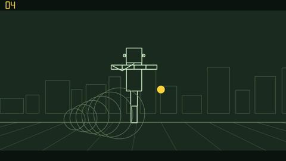

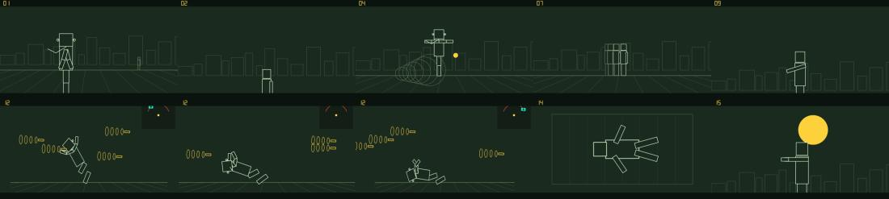


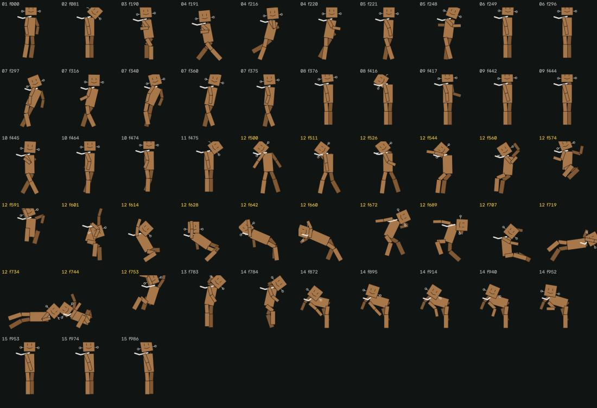

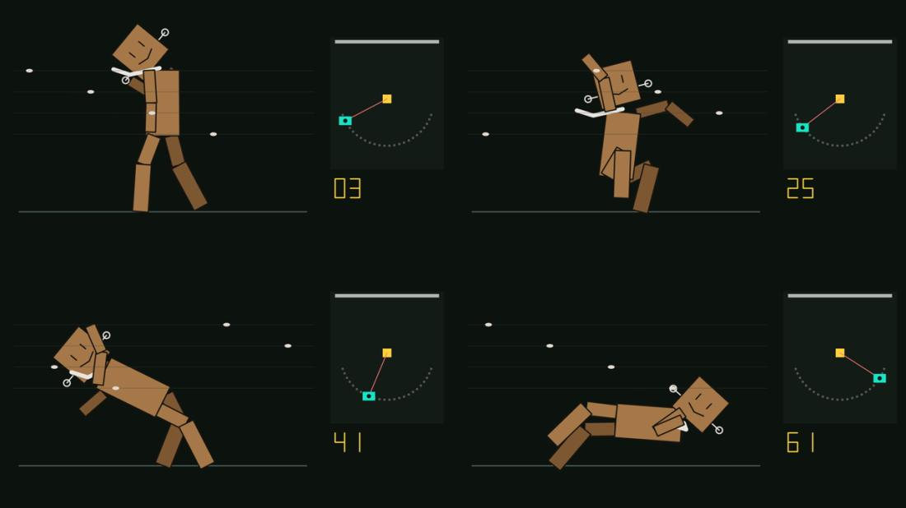

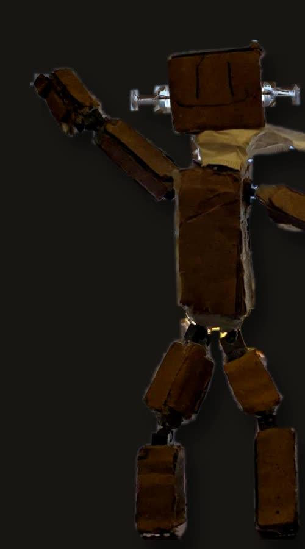

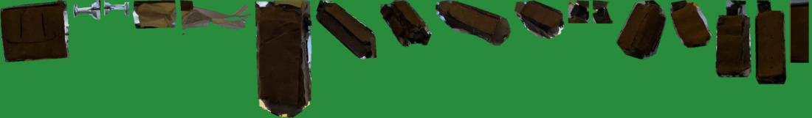

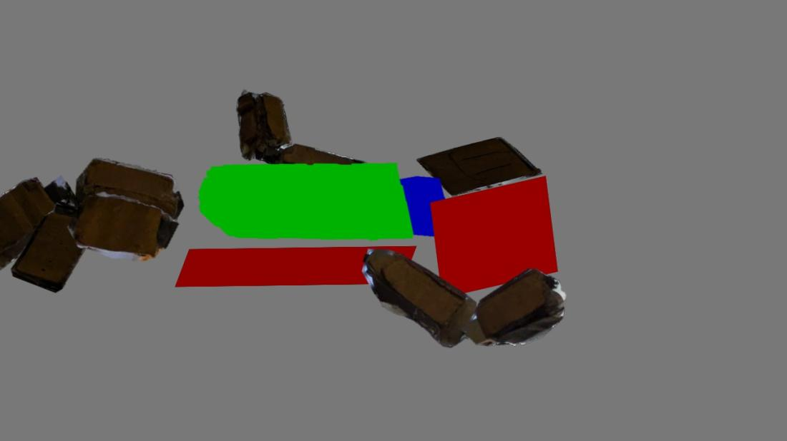

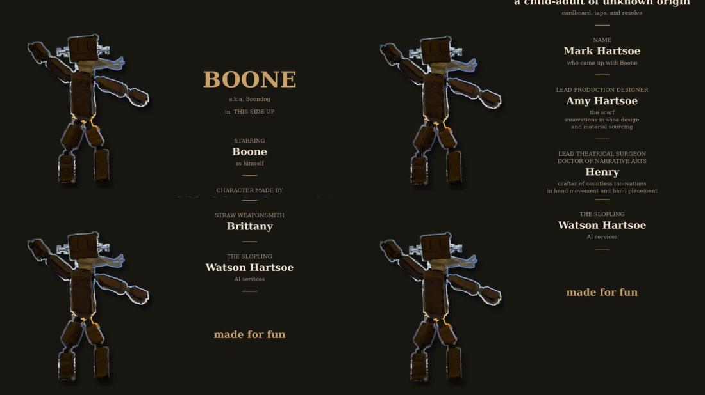

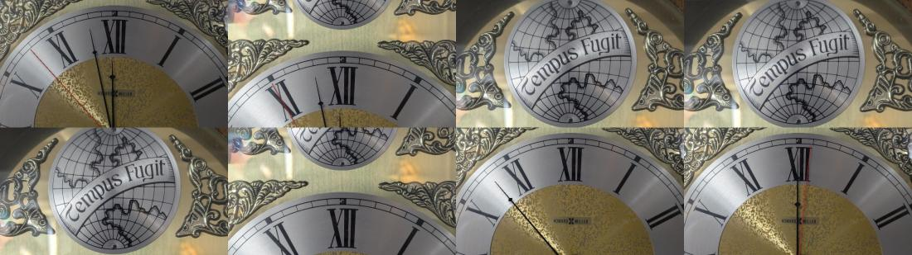

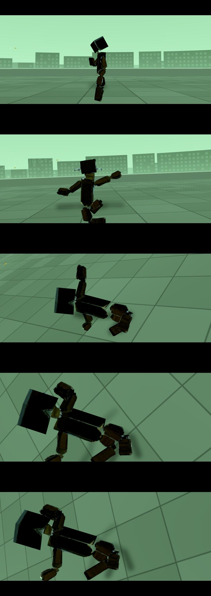

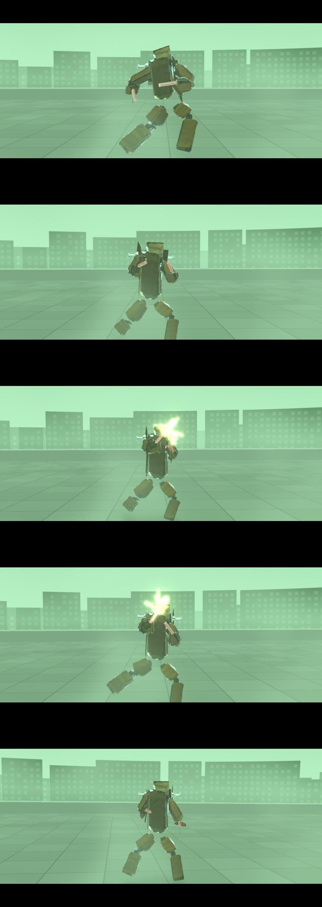

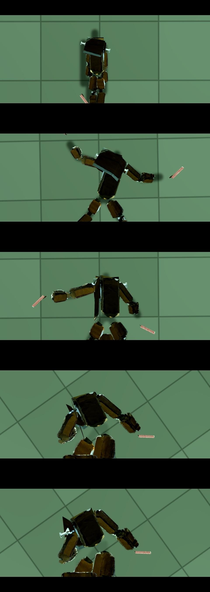

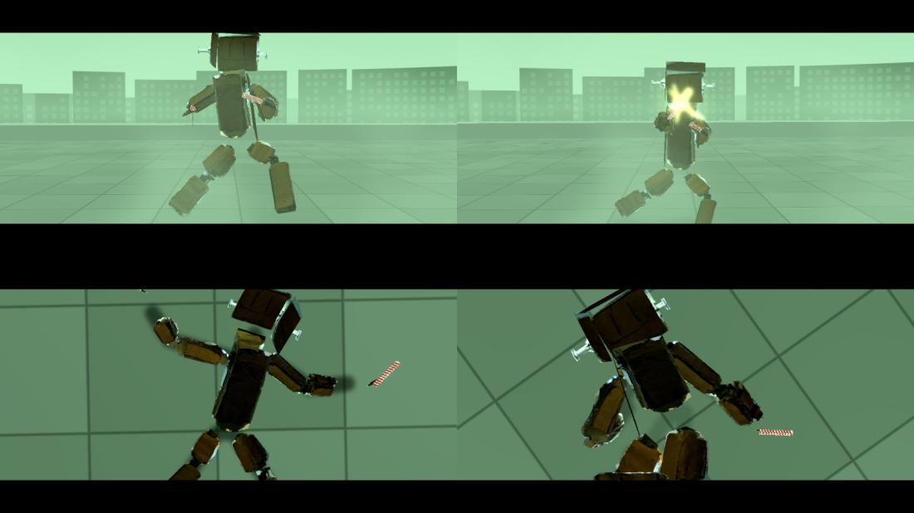
Show 1 more from this step

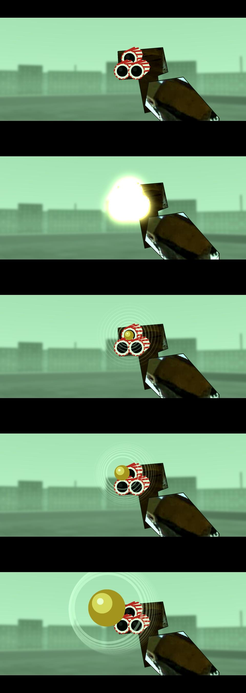
What broke and what changed
- Retarget v1 put Boone's head in the wrong place.The head sits on the neck along the torso; tilt from the eye and ear line, turn from the nose against the ears.
- Single estimates swapped left and right between frames.Five estimates fused, each frame checked against the one before.
Read the record
Carried forward
The measured camera path. The real orbit in the next case has to follow it.